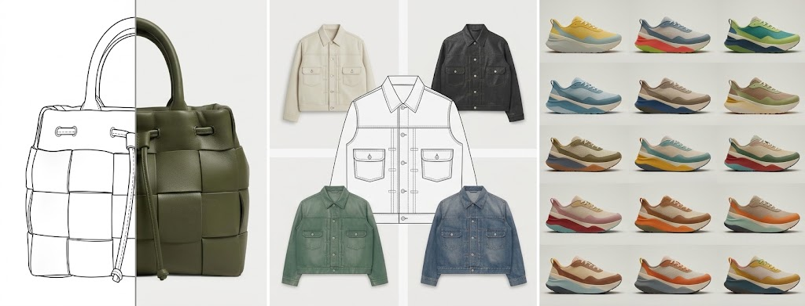
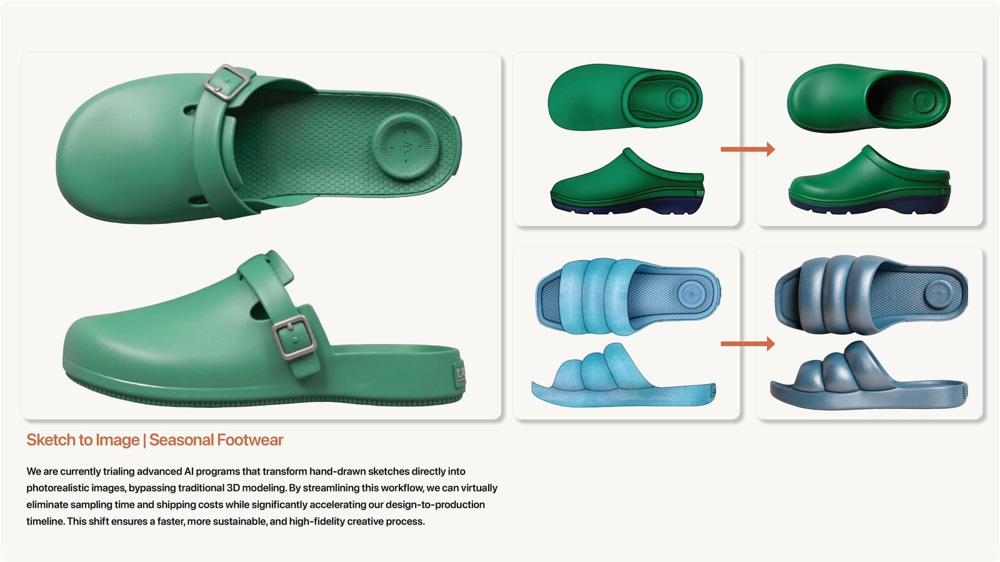
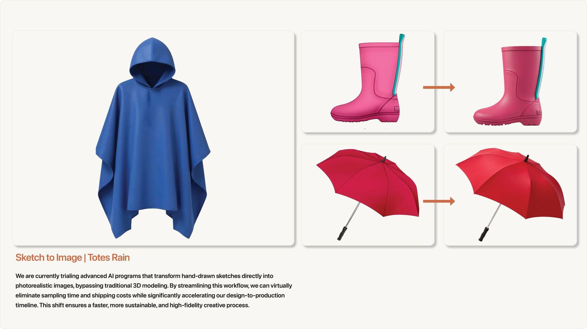

Leading a Design Team into AI
Researching AI design platforms, earning buy-in, addressing concerns head on, and training 30+ design and merchandising team members to use AI in their work.

Leading the team through a new kind of tool
Generative AI tools for product design were arriving fast, and designers wanted to try them. My job was to find the tools that would really help, bring them in responsibly, and make sure the team stayed in charge of the design decisions.
Licensed brand work adds a layer most design teams don’t have. Every product answers to a licensor’s brand standards, so any new tool had to fit inside those rules as well as our own.
Research
Compared leading AI design platforms side by side.
Decide
Weighed team buy-in, cost and governance.
Address concerns
Met environmental and job fears head on.
Train
Rolled out to 30+ design and merchandising team members.
Apply
AI in trend research, concepts and design.
Researching the platforms
As a founding member of RAA’s AI Trailblazers group, I led our research into AI design platforms built for product and fashion teams. We put three of the strongest options through real design work.
| Platform | What it does |
|---|---|
| Vizcom.AI | An AI design platform that turns sketches into photorealistic renders and 3D, built for product designers in footwear, apparel and industrial design. |
| Raspberry AI | A generative AI platform for fashion that takes sketches to photorealistic renders, lifestyle imagery and virtual try-on. |
| Fermat | A generative AI toolbox for fashion and luxury design teams that designs from mood boards, creates realistic renders and applies materials. |

Choosing on more than features
The right platform wasn’t just the one with the best renders. The decision came down to three factors, and each one mattered to a different group of people.
Design team buy-in
Change is hard. If designers don’t believe in a tool, it won’t get used, so their hands-on feedback carried real weight.
Licensing and cost
Upper management needed the numbers. Cost wasn’t the deciding factor, but every option had to be evaluated on it.
Legal and security
Legal and IT reviewed each platform’s terms so the choice could pass through our AI governance committee.
Guardrails for licensed work
Picking a platform was only half the job. Five rules made AI safe to use on licensed brand work.
- 01
Protect the brand and our partners
Set clear rules on what data and assets can go into AI tools, so licensor and company work stays safe.
- 02
Get legal aligned early
Worked with Legal to approve the exact wording for AI-generated, customer-facing images, so nobody had to guess.
- 03
Make it easy for designers and marketing
Turned policy into simple guidelines both teams follow the same way every time.
- 04
Keep a human in the loop
Required a designer or manager to review AI work before it left the building.
- 05
Lead the change, not just the rules
Guided the team through adopting AI with clear ownership, so it speeds up design instead of adding risk.
Addressing the fears up front
AI brings real, valid concerns, especially for younger designers early in their careers. Two came up again and again: the environmental cost of AI and what it means for their jobs. I believed both had to be addressed openly from the start, not brushed aside by management.
Researching the real footprint
As Product Group Lead on RAA’s ESG Committee, I worked with our head of sustainability to research the real environmental impact of AI and what we could do as a company to offset it, so the team got facts instead of headlines.
A tool, not a replacement
I set the narrative early: these platforms are tools for the design team, not a substitute for it. The investment was in the people we already valued, giving them more room to explore creatively while working more efficiently.
If the team is worried, the rollout has already stalled. Naming the concerns first is what earns the right to ask people to change.
On leading through change
Rolling it out to 30+ people
Tools only matter if people use them. I led the rollout and training for more than 30 design and merchandising team members, and built a group of power users who could help others day to day.
I was also the main contact with our software partners for demos, licensing, escalations and feature requests. That meant turning what the team needed into clear feedback for the people building the tools.
Test new tools with a small group, keep designers in charge of the decisions, and scale what works.
How I bring in new tools
To help the team get started, I put together a short Vizcom 101 quick guide for designers. It follows the workflow from sketch to export, uses examples from neckwear, belts, and wallets, and ends with a suggested first 45 minutes of practice. Click any page to enlarge it, or download the full PDF.


Vizcom 101 quick guide
AI in the design process
The team used AI in trend research, concept ideation and design. Our sketch-to-image trials turned hand-drawn sketches directly into photorealistic concept images, a faster way to review ideas before committing to a physical sample.


Renders generated by Raspberry AI, from sketches I provided during our platform evaluation.
Early results
In our early use, we were able to design and tech pack samples at twice the speed of our standard process. The realistic AI images also gave factories a clearer picture of the design, so they could develop more accurate samples and we needed less resampling overall.
What changed
The team came out of it with a vetted platform, a governance-approved path for using it on brand work, trained power users, and honest answers to the questions that worried them most. AI became a normal part of how we researched trends and developed concepts, with designers still making the calls.
The same approach shaped how I now build each season’s trend forecast. See Setting Each Season’s Trend Direction.